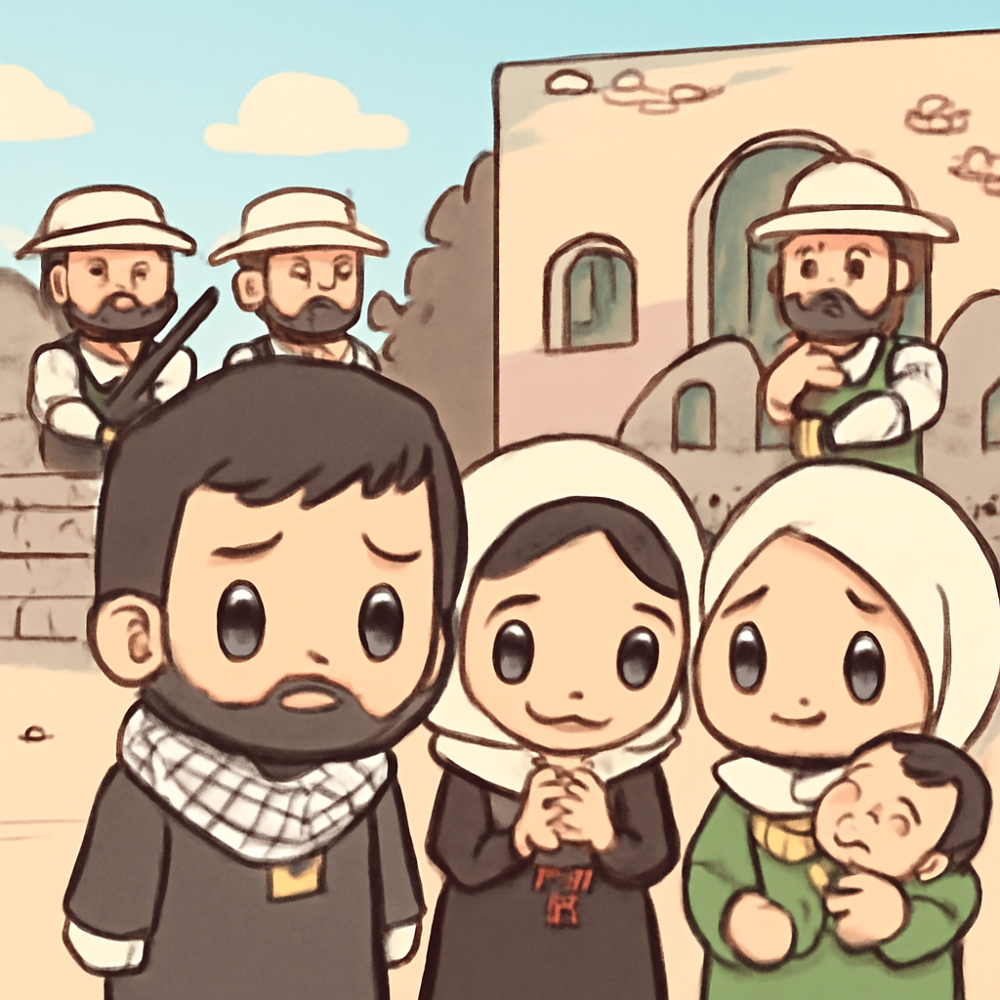
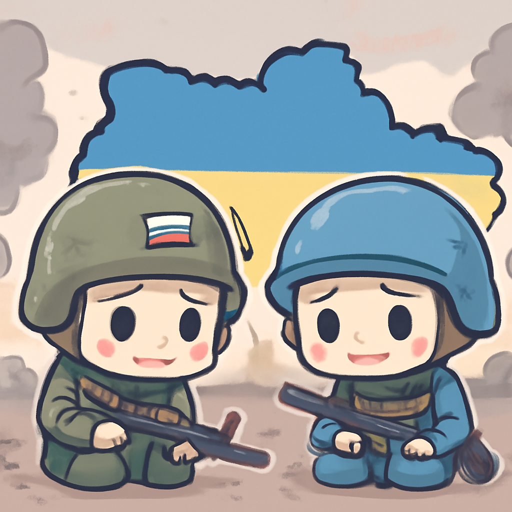
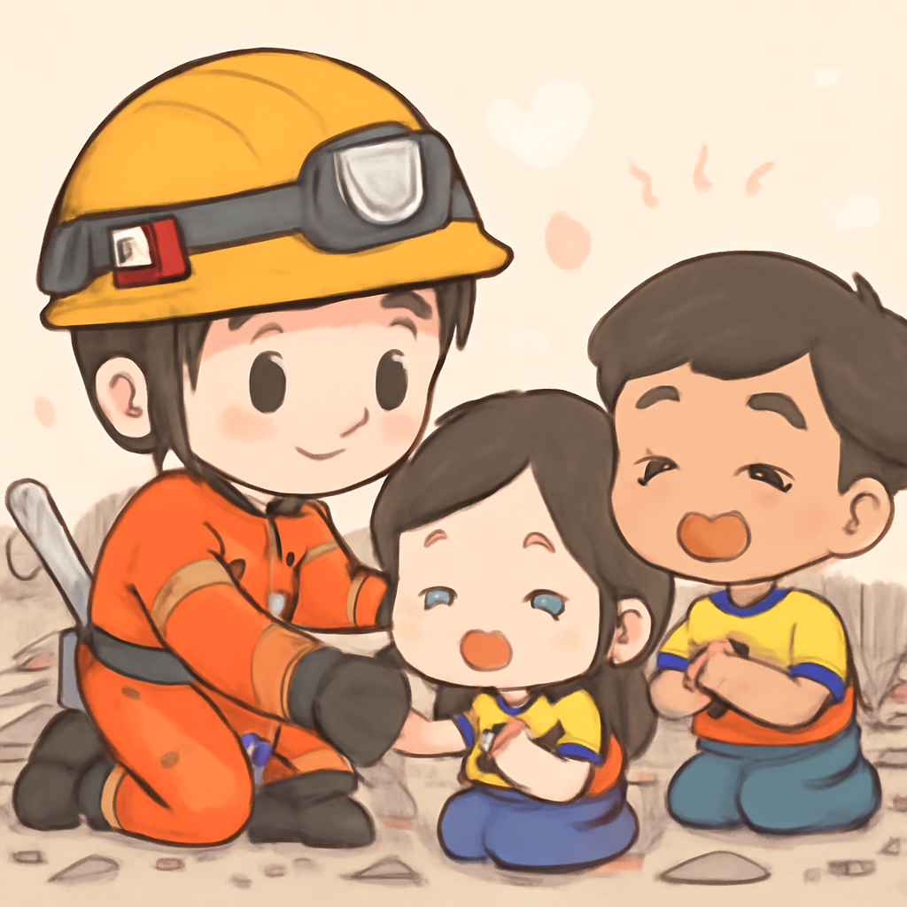

其一 · 以色列西岸 · 以色列定居者重啟圍攻
以色列定居者重啟圍攻，巴勒斯坦家庭生活困境加劇

在以色列西岸，巴勒斯坦家庭面臨被以色列軍方驅逐的危機。家庭的生活被以色列定居者包圍，情勢緊張。這不僅是人道危機，還影響到地區的穩定，讓人不禁想：怎麼會有人把別人的家當作遊樂場？
🔗 原始新聞 ↗
2026-08-14 · 以古觀今，以笑抗愁
以色列定居者重啟圍攻，巴勒斯坦家庭生活困境加劇

在以色列西岸，巴勒斯坦家庭面臨被以色列軍方驅逐的危機。家庭的生活被以色列定居者包圍，情勢緊張。這不僅是人道危機，還影響到地區的穩定，讓人不禁想：怎麼會有人把別人的家當作遊樂場？
🔗 原始新聞 ↗
俄烏之戰進入第五年，普京無法宣稱勝利

在華府，諾貝爾和平獎獲得者德米特里·穆拉特夫表示，普京已經無法再說他贏了烏克蘭，事實上，戰爭的持續只會讓烏克蘭更加堅韌。這場衝突不僅影響兩國，還對全球安全局勢造成影響，讓人不得不關注。
🔗 原始新聞 ↗
羅馬尼亞唯一核電廠停工，電力供應堪憂
在羅馬尼亞，因為熱浪導致多瑪河水位劇降，唯一的核電廠停工，這影響了20%的電力供應。當地居民開始擔心，這可不是個小問題，畢竟夏天沒有空調可不是好事！
🔗 原始新聞 ↗
英國今夏高溫警報，氣候變化成焦點
英國氣象局發出高溫警報，這個夏天似乎要成為歷史上最熱的一個。高溫讓人想起了“英式夏天”這個名詞的過去：沒有陽光，只有雨水。看來今年的夏天不再是英國人茶話會的話題，而是氣候變化的大考驗。
🔗 原始新聞 ↗
墨西哥志願者協助哥倫比亞地震救援

在哥倫比亞，墨西哥志願者救援隊Topos Azteca展開了援助行動，幫助搜尋地震災後的生還者。這支隊伍不僅在當地受到了熱烈歡迎，更是讓人們在困境中看到了希望，證明了人類的團結力量。
🔗 原始新聞 ↗